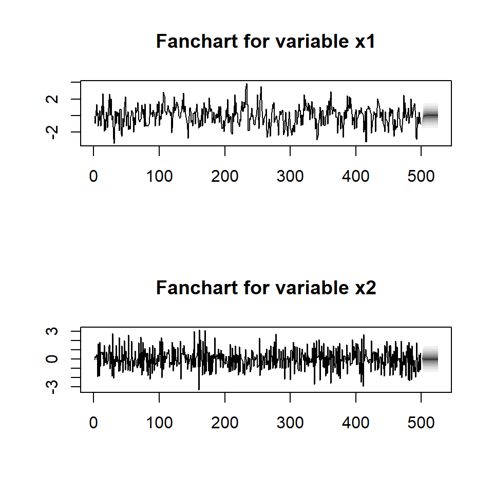

Tema 2: Análisis multivariado de series temporales(3)
![]()
VARX(p)
Contenido
VARX(p)
Ejemplo simulado
Pronóstico
El análisis del impulso-respuesta
Ejemplo
VARX(p)
- Vamos a enfocarnos en el modelo VAR(p) con posibilidad de incluir covariables (variables exógenas):
\[X_{t}=CD_t+\phi_1 X_{t-1}+...+\phi_pX_{t-p}+a_{t}\] donde \(\phi_0\) es un vector de dimensión \(k\), \(\phi_i\) matrices \(k \times k\) para \(i=1,...,p\), \(\phi_p \neq 0\) y \(a_t\) es una secuencia de i.i.d. vectores aleatorios con media 0 y matriz de covariancias \(\Sigma_a\), que es definida positiva, \(C\) es la matriz de coeficientes de dimiensión \((k \times M)\) y \(D_t\) es el vector columna de variables exógenas \((M \times 1)\).
Su representación con el operador autorregresivo es \[\phi(B) X_{t}=CD_t+a_{t}\] donde \(\phi(B)=I_k- \phi_1 B-...- \phi_p B^p\) es el operador autorregresivo.
Si las soluciones de \(|\phi(B)|\), están fuera del círculo unitario, entonces VARX(p) es estacionario.
VARX(1)
- VARX(1) con 3 series tepmorales y variables exógenas: intercepto y tendencia.
\[X_{t}=C D_t+\phi X_{t-1}+a_{t},\]
\[\text{donde}~~ C=\begin{bmatrix}\alpha_{1} & \beta_{1} \\ \alpha_{2} & \beta_{2} \\ \alpha_{3} & \beta_{3} \end{bmatrix} ~~\text{y}~~ D_t= \begin{bmatrix}1 \\ t \end{bmatrix}\]
- Es decir,
\[X_{1,t}=\alpha_1 + \beta_1 t+\phi_{11}X_{1,t-1}+\phi_{12}X_{2,t-1}+\phi_{13}X_{3,t-1}+a_{1,t}\]
\[X_{2,t}=\alpha_2+ \beta_2 t+\phi_{21}X_{1,t-1}+\phi_{22}X_{2,t-1}+\phi_{23}X_{3,t-1}+a_{2,t}\]
\[X_{3,t}=\alpha_3+ \beta_3 t+\phi_{31}X_{1,t-1}+\phi_{32}X_{2,t-1}+\phi_{33}X_{3,t-1}+a_{3,t}\] # Causalidad de Granger
Causalidad de Granger de un VAR(1)
- Considere el modelo VAR(1):
\[X_{t}=\phi_0+\phi_1 X_{t-1} + a_{t}\] - Expresando explícitamente la ecuación,
\[\begin{bmatrix}X_{1,t}\\ X_{2,t} \end{bmatrix} =\begin{bmatrix}\phi_{10}\\ \phi_{20} \end{bmatrix} + \begin{bmatrix}\phi_{1,11} & \phi_{1,12} \\ \phi_{1,21} & \phi_{1,22} \end{bmatrix} \begin{bmatrix}X_{1,t-1}\\ X_{2,t-1} \end{bmatrix} +\begin{bmatrix}a_{1,t}\\ a_{2,t} \end{bmatrix}\]
- O bien,
\[X_{1,t}=\phi_{10}+\phi_{1,11}X_{t-1,1}+\phi_{1,12}X_{t-1,2}+a_{1,t}\]
\[X_{2,t}=\phi_{20}+\phi_{1,21}X_{t-1,1}+\phi_{1,22}X_{t-1,2}+a_{2,t}\]
- Habíamos discutido que \(X_{1,t}\) causa a \(X_{2,t}\) en el sentido de Granger si \(\phi_{1,21} \neq 0\).
Causalidad de Granger de un VARX(p)
- Recordemos que el modelo VARX(p) se puede representar por:
\[X_{t}=CD_t+ \sum_{i=1}^p \phi_i X_{t-i}+a_{t}\]
- Podemos representar este modelo por bloques. Considere dos subvectores de \(X_t\), i.e. \(X_t=(\dot{X}_{1,t},\dot{X}_{2,t})\) donde \(\dot{X}_{1,t}\) de dimensión \(k_1\) y \(\dot{X}_{2,t}\) de dimensión \(k_2\) y \(k=k_1+k_2\).
\[\begin{bmatrix}\dot{X}_{1,t}\\ \dot{X}_{2,t} \end{bmatrix} = CD_t + \sum_{i=1}^p \begin{bmatrix}\Phi_{i,11} & \Phi_{i,12} \\ \Phi_{i,21} & \Phi_{i,22} \end{bmatrix} \begin{bmatrix}\dot{X}_{1,t-i}\\ \dot{X}_{2,t-i} \end{bmatrix} +\begin{bmatrix}\dot{a}_{1,t}\\ \dot{a}_{2,t} \end{bmatrix}\]
- Note que ahora los elementos de la matriz de coeficientes \(\Phi_{i,12},\Phi_{i,12},\Phi_{i,21},\Phi_{i,22},~i=1,...,p\) son matrices también.
Causalidad de Granger de VAR(1) con \(k=3\)
\[\begin{bmatrix}X_{1,t}\\ X_{2,t}\\ X_{3,t} \end{bmatrix}=\begin{bmatrix}\alpha_{1}\\ \alpha_{2}\\ \alpha_{3} \end{bmatrix}+\begin{bmatrix}\phi_{1,11} & \phi_{1,12} & \phi_{1,13} \\ \phi_{1,21} & \phi_{1,22} & \phi_{1,23}\\ \phi_{1,31} & \phi_{1,32} & \phi_{1,33} \end{bmatrix} \begin{bmatrix}X_{1,t-1}\\ X_{2,t-1}\\ X_{3,t-1} \end{bmatrix}+a_{t}\]
Suponga que nos interesa ver la causalidad de Granger entre \(X_{1,t}\) y \((X_{2,t},X_{3,t})\), i.e. \(X_t=(\dot{X}_{1,t},\dot{X}_{2,t})\) donde \(\dot{X}_{1,t}=X_{1,t}\) y \(\dot{X}_{2,t}=(X_{2,t},X_{3,t})\) con \(k_1=1\) y \(k_2=2\).
En este caso,
\[\Phi_{1,11}=\left[\phi_{1,11}\right],~~\Phi_{1,12}=\left[\phi_{1,12},\phi_{1,13}\right]\] \[\Phi_{1,21}=\begin{bmatrix}\phi_{1,21}\\ \phi_{1,31} \end{bmatrix},~~~\Phi_{1,22}=\begin{bmatrix} \phi_{1,22} & \phi_{1,23}\\ \phi_{1,32} & \phi_{1,33}\end{bmatrix}\]
\[\begin{bmatrix}\dot{X}_{1t}\\ \dot{X}_{2t} \end{bmatrix} = CD_t + \sum_{i=1}^p \begin{bmatrix}\Phi_{i,11} & \Phi_{i,12} \\ \Phi_{i,21} & \Phi_{i,22} \end{bmatrix} \begin{bmatrix}\dot{X}_{1,t-i}\\ \dot{X}_{2,t-i} \end{bmatrix} +\begin{bmatrix}a_{1t}\\ a_{2t} \end{bmatrix}\]
- Para contrastar la hipótesis de que el subvector \(\dot{X}_{1t}\) no cause a \(\dot{X}_{2t}\) en el sentido de Granger sería contrastar:
\(H_0:\Phi_{i,21}=0\) para todo \(i=1,...,p\)
\(H_1:\Phi_{i,21} \neq 0\) para algún \(i=1,...,p\).
- Considere \(\beta\) el conjunto de todos los parámetros de interés, i.e. todos los elementos de \(\left[\phi_1,...,\phi_p,C\right]\), podemos escribir las restricciones en la siguiente ecuación \[\Gamma \beta=c\] en donde \(\Gamma\) es una matriz \((N \times (k^2p+kM))\).
Para probar la causalidad de Granger, se utiliza el estadístico de Wald para probar la hipótesis. Este estadístico tiene una distribución asintótica de \(F(pk_1k_2,kT-n^*)\) donde \(n^*\) es la cantidad total de parámetros del modelo.
Por otro lado, para probar la causalidad instantánea, se utiliza el estadístico Wald pero con las hipótesis planteadas de la siguiente forma:
\[\begin{align}H_0:&\Gamma \Sigma_a=c \\ H_1:\Gamma \Sigma_a \neq c \end{align}\]
donde \(\Gamma\) es una matriz \((N \times K(K+1)/2)\)
- En este caso, el estadístico tiene una distribución asintótica de \(\chi_{N}^2\).
Ejemplo simulado
Contenido
VARX(p)
Ejemplo simulado
Pronóstico
El análisis del impulso-respuesta
Ejemplo
Ejemplo simulado
- Considere una realización de \(T=1000\) de un VAR(1):
\[\begin{bmatrix}X_{1t}\\ X_{2t} \end{bmatrix} = \begin{bmatrix} 0.5 & 0.3 \\ 0 & -0.5 \end{bmatrix} \begin{bmatrix}X_{1,t-1}\\ X_{2,t-1} \end{bmatrix} +\begin{bmatrix}a_{1t}\\ a_{2t} \end{bmatrix}\] donde \(a_t \sim N(0,\Sigma_a)\) con \(\Sigma_a=I_2\).
Estimación de modelos
vars::VARselectselecciona el mejor modelo de acuerdo con los diferentes criterios de información.
$selection
AIC(n) HQ(n) SC(n) FPE(n)
1 1 1 1
$criteria
1 2 3 4 5
AIC(n) -0.08456655 -0.07853599 -0.06463957 -0.051483956 -0.03925039
HQ(n) -0.07122862 -0.05186014 -0.02462580 0.001867746 0.02743924
SC(n) -0.05059032 -0.01058354 0.03728910 0.084420941 0.13063073
FPE(n) 0.91891058 0.92446944 0.93740749 0.949824236 0.96152050vars::rootsverifica que los módulos de los autovalores son menores a 1.
Los diagnósticos
Portmanteau Test (asymptotic)
data: Residuals of VAR object varsimest
Chi-squared = 61.755, df = 60, p-value = 0.4132
ARCH (multivariate)
data: Residuals of VAR object varsimest
Chi-squared = 52.264, df = 45, p-value = 0.2126$JB
JB-Test (multivariate)
data: Residuals of VAR object varsimest
Chi-squared = 2.1107, df = 4, p-value = 0.7154
$Skewness
Skewness only (multivariate)
data: Residuals of VAR object varsimest
Chi-squared = 0.82008, df = 2, p-value = 0.6636
$Kurtosis
Kurtosis only (multivariate)
data: Residuals of VAR object varsimest
Chi-squared = 1.2906, df = 2, p-value = 0.5245
$Granger
Granger causality H0: x2 do not Granger-cause x1
data: VAR object varsimest
F-Test = 48.707, df1 = 1, df2 = 994, p-value = 5.425e-12
$Instant
H0: No instantaneous causality between: x2 and x1
data: VAR object varsimest
Chi-squared = 0.061316, df = 1, p-value = 0.8044$Granger
Granger causality H0: x1 do not Granger-cause x2
data: VAR object varsimest
F-Test = 3.6817, df1 = 1, df2 = 994, p-value = 0.0553
$Instant
H0: No instantaneous causality between: x1 and x2
data: VAR object varsimest
Chi-squared = 0.061316, df = 1, p-value = 0.8044Pronóstico
Contenido
VARX(p)
Ejemplo simulado
Pronóstico
El análisis del impulso-respuesta
Ejemplo
Pronóstico
- Dadas las observaciones \(X_1,...,X_T\), el pronóstico \(h\) pasos para frente, \(X_{T+h}\) es dado por
\[X_{T}(h)=CD_{T+h}+\phi_1 X_{T+h-1}+...+\phi_pX_{T+h-p},\] donde \(X_{T}(j)=X_{T+j}\) para \(j\leq 0\).
El error de pronóstico de \(h\) pasos para frente es dado por \[e_h(h)=X_{T+h}-X_{T}(h)\]
El cálculo del error de pronóstico de \(X_{T}(h)\) es más conveniente usar la representación de MA, y el error de pronóstico es dado por
\[X_{T}(h)= a_{T+h} + \phi_1 a_{T+h-1}+...+\phi_{h-1} a_{T+1},\]
Ejemplo
El análisis del impulso-respuesta
Contenido
VARX(p)
Ejemplo simulado
Pronóstico
El análisis del impulso-respuesta
Ejemplo
El análisis del impulso-respuesta
- Para cualquier modelo VAR(p) estacionario, tiene la representación de MA:
\[X_{t}= \theta_0 a_{t}+\theta_1 a_{t-1}+ \theta_{2} a_{t-2}+...\]
Se interpreta como una regresión en donde cada entrada \((i,j)\) de \(\theta_m,~m=1,...\) representa el cambio del valor esperado de \(X_{j}\) bajo un cambio de una unidad de \(X_i\).
Por ejemplo, para el modelo:
\[\begin{bmatrix}X_{1t}\\ X_{2t} \end{bmatrix} = \begin{bmatrix}\theta_{0,11} & \theta_{0,12} \\ \theta_{0,21} & \theta_{0,22} \end{bmatrix} \begin{bmatrix}a_{1,t}\\ a_{2,t} \end{bmatrix} +\begin{bmatrix}\theta_{1,11} & \theta_{1,12} \\ \theta_{1,21} & \theta_{1,22} \end{bmatrix} \begin{bmatrix}a_{1,t-1}\\ a_{2,t-1} \end{bmatrix}+\dots\]
\(\theta_{1,21}\) representa el cambio del valor esperado de \(X_{2,t+1}\) bajo un cambio de una unidad de \(X_{1,t}\).
\(\theta_{1,12}\) representa el cambio del valor esperado de \(X_{1,t+1}\) bajo un cambio de una unidad de \(X_{2,t}\).
Ejemplo simulado
Ejemplo
Contenido
VARX(p)
Ejemplo simulado
Pronóstico
El análisis del impulso-respuesta
Ejemplo
Ejemplo: series macroeconómicas en Canada
Estimación
$selection
AIC(n) HQ(n) SC(n) FPE(n)
3 2 1 3
$criteria
1 2 3 4 5
AIC(n) -6.457999837 -6.862930587 -6.9695915550 -6.826230019 -6.696865092
HQ(n) -6.159906898 -6.366109023 -6.2740413655 -5.931951204 -5.603857651
SC(n) -5.710735482 -5.617489996 -5.2259747277 -4.584436956 -3.956895792
FPE(n) 0.001570168 0.001052827 0.0009575467 0.001128994 0.001329669
6 7 8 9 10
AIC(n) -6.687175990 -6.55982329 -6.584746129 -6.493397603 -6.523612352
HQ(n) -5.395439924 -5.06935860 -4.895552811 -4.605475660 -4.436961783
SC(n) -3.449030454 -2.82350152 -2.350248120 -1.760723357 -1.292761870
FPE(n) 0.001412901 0.00172546 0.001859561 0.002330702 0.002704777
VAR Estimation Results:
=========================
Endogenous variables: e, prod, rw, U
Deterministic variables: both
Sample size: 82
Log Likelihood: -170.726
Roots of the characteristic polynomial:
0.9071 0.9071 0.9037 0.7092 0.7092 0.2549 0.166 0.166
Call:
vars::VAR(y = Canada, p = 2, type = "both")
Estimation results for equation e:
==================================
e = e.l1 + prod.l1 + rw.l1 + U.l1 + e.l2 + prod.l2 + rw.l2 + U.l2 + const + trend
Estimate Std. Error t value Pr(>|t|)
e.l1 1.636e+00 1.510e-01 10.830 < 2e-16 ***
prod.l1 1.716e-01 6.280e-02 2.733 0.00789 **
rw.l1 -6.006e-02 5.628e-02 -1.067 0.28947
U.l1 2.740e-01 2.055e-01 1.333 0.18661
e.l2 -4.842e-01 1.648e-01 -2.938 0.00443 **
prod.l2 -9.766e-02 6.747e-02 -1.448 0.15207
rw.l2 1.689e-03 5.621e-02 0.030 0.97611
U.l2 1.433e-01 2.108e-01 0.680 0.49886
const -1.510e+02 6.921e+01 -2.181 0.03244 *
trend -5.706e-03 1.652e-02 -0.345 0.73077
---
Signif. codes: 0 '***' 0.001 '**' 0.01 '*' 0.05 '.' 0.1 ' ' 1
Residual standard error: 0.365 on 72 degrees of freedom
Multiple R-Squared: 0.9985, Adjusted R-squared: 0.9983
F-statistic: 5435 on 9 and 72 DF, p-value: < 2.2e-16
Estimation results for equation prod:
=====================================
prod = e.l1 + prod.l1 + rw.l1 + U.l1 + e.l2 + prod.l2 + rw.l2 + U.l2 + const + trend
Estimate Std. Error t value Pr(>|t|)
e.l1 -0.14817 0.26200 -0.566 0.5735
prod.l1 1.09881 0.10894 10.087 2.05e-15 ***
rw.l1 0.01519 0.09762 0.156 0.8768
U.l1 -0.57737 0.35641 -1.620 0.1096
e.l2 0.23300 0.28585 0.815 0.4177
prod.l2 -0.21942 0.11703 -1.875 0.0649 .
rw.l2 -0.09343 0.09750 -0.958 0.3411
U.l2 0.89061 0.36574 2.435 0.0174 *
const -2.16645 120.05179 -0.018 0.9857
trend 0.06729 0.02865 2.348 0.0216 *
---
Signif. codes: 0 '***' 0.001 '**' 0.01 '*' 0.05 '.' 0.1 ' ' 1
Residual standard error: 0.6332 on 72 degrees of freedom
Multiple R-Squared: 0.9802, Adjusted R-squared: 0.9777
F-statistic: 396.4 on 9 and 72 DF, p-value: < 2.2e-16
Estimation results for equation rw:
===================================
rw = e.l1 + prod.l1 + rw.l1 + U.l1 + e.l2 + prod.l2 + rw.l2 + U.l2 + const + trend
Estimate Std. Error t value Pr(>|t|)
e.l1 -0.24395 0.31673 -0.770 0.4437
prod.l1 -0.13328 0.13169 -1.012 0.3149
rw.l1 0.85895 0.11801 7.279 3.38e-10 ***
U.l1 -0.08787 0.43086 -0.204 0.8390
e.l2 0.21384 0.34556 0.619 0.5380
prod.l2 -0.05273 0.14147 -0.373 0.7105
rw.l2 0.07839 0.11787 0.665 0.5081
U.l2 -0.25445 0.44213 -0.576 0.5667
const 133.30872 145.12882 0.919 0.3614
trend 0.06806 0.03464 1.965 0.0533 .
---
Signif. codes: 0 '***' 0.001 '**' 0.01 '*' 0.05 '.' 0.1 ' ' 1
Residual standard error: 0.7654 on 72 degrees of freedom
Multiple R-Squared: 0.9989, Adjusted R-squared: 0.9988
F-statistic: 7398 on 9 and 72 DF, p-value: < 2.2e-16
Estimation results for equation U:
==================================
U = e.l1 + prod.l1 + rw.l1 + U.l1 + e.l2 + prod.l2 + rw.l2 + U.l2 + const + trend
Estimate Std. Error t value Pr(>|t|)
e.l1 -0.57610 0.11571 -4.979 4.23e-06 ***
prod.l1 -0.08790 0.04811 -1.827 0.071824 .
rw.l1 0.01182 0.04311 0.274 0.784807
U.l1 0.60019 0.15740 3.813 0.000287 ***
e.l2 0.38095 0.12624 3.018 0.003520 **
prod.l2 0.04321 0.05168 0.836 0.405937
rw.l2 0.04662 0.04306 1.083 0.282552
U.l2 -0.09492 0.16152 -0.588 0.558584
const 180.98536 53.01834 3.414 0.001056 **
trend 0.01276 0.01265 1.008 0.316798
---
Signif. codes: 0 '***' 0.001 '**' 0.01 '*' 0.05 '.' 0.1 ' ' 1
Residual standard error: 0.2796 on 72 degrees of freedom
Multiple R-Squared: 0.973, Adjusted R-squared: 0.9696
F-statistic: 288.2 on 9 and 72 DF, p-value: < 2.2e-16
Covariance matrix of residuals:
e prod rw U
e 0.133242 -0.004968 -0.04005 -0.069553
prod -0.004968 0.400914 0.03445 0.008295
rw -0.040049 0.034449 0.58590 0.028808
U -0.069553 0.008295 0.02881 0.078193
Correlation matrix of residuals:
e prod rw U
e 1.0000 -0.02150 -0.14334 -0.68142
prod -0.0215 1.00000 0.07108 0.04685
rw -0.1433 0.07108 1.00000 0.13459
U -0.6814 0.04685 0.13459 1.00000Los diagnósticos
Portmanteau Test (asymptotic)
data: Residuals of VAR object fitvar
Chi-squared = 209.74, df = 224, p-value = 0.7443
ARCH (multivariate)
data: Residuals of VAR object fitvar
Chi-squared = 528.14, df = 500, p-value = 0.1855$JB
JB-Test (multivariate)
data: Residuals of VAR object fitvar
Chi-squared = 2.465, df = 8, p-value = 0.9633
$Skewness
Skewness only (multivariate)
data: Residuals of VAR object fitvar
Chi-squared = 1.3722, df = 4, p-value = 0.849
$Kurtosis
Kurtosis only (multivariate)
data: Residuals of VAR object fitvar
Chi-squared = 1.0928, df = 4, p-value = 0.8954Causalidad de Granger
$Granger
Granger causality H0: e prod rw do not Granger-cause U
data: VAR object fitvar
F-Test = 8.5625, df1 = 6, df2 = 288, p-value = 1.422e-08
$Instant
H0: No instantaneous causality between: e prod rw and U
data: VAR object fitvar
Chi-squared = 26.088, df = 3, p-value = 9.139e-06$Granger
Granger causality H0: prod rw do not Granger-cause e U
data: VAR object fitvar
F-Test = 2.964, df1 = 8, df2 = 288, p-value = 0.003337
$Instant
H0: No instantaneous causality between: prod rw and e U
data: VAR object fitvar
Chi-squared = 1.9934, df = 4, p-value = 0.737Análisis del impulso-respuesta
Predicciones

Paquetes en R
Para replicar los ejemplos de esta presentación, necesitan estos paquetes: